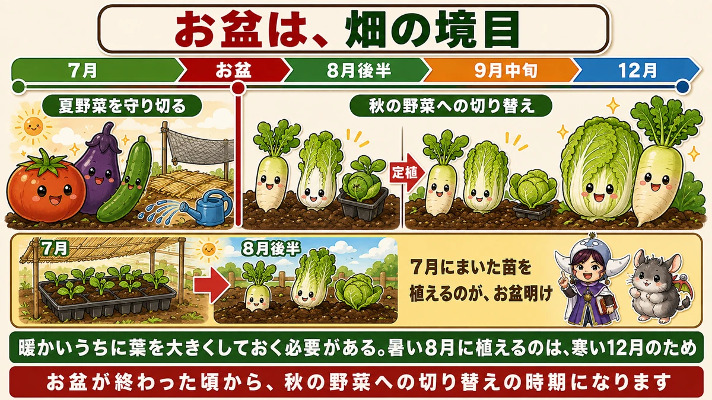
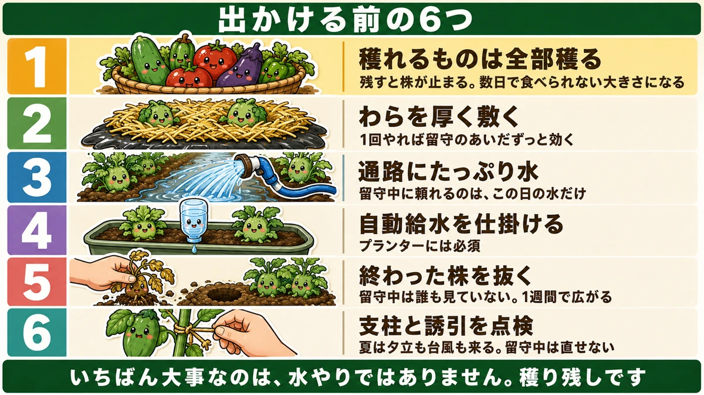
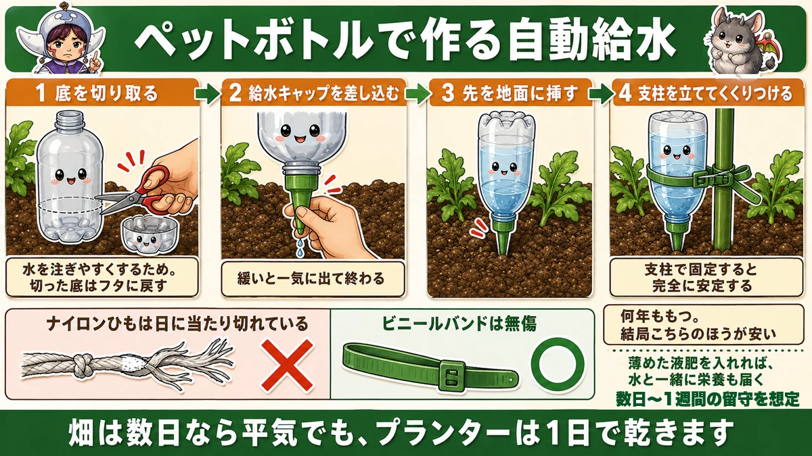
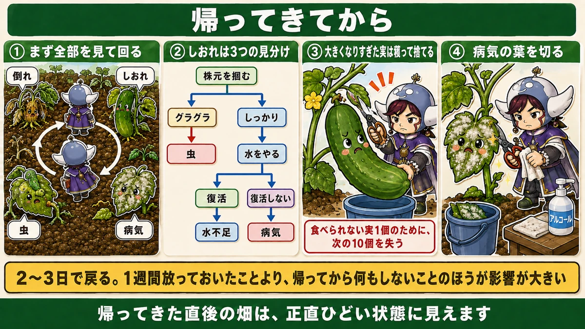

夏に畑を留守にするときの対策｜出かける前の収穫・わら・水やり・ペットボトル給水・帰宅後の見回り
どうも、8150（えいこう）です🌱 家庭菜園歴8年、理科の教員免許を持っていて、有機・無農薬で野菜を育てています。
📖 この記事の目次
この記事で分かること
- お盆は、家庭菜園のひとつの境目です。お盆が終わったころから、秋冬野菜への切りかえの時期に入ります。
- 出かける前には、とれるものはとっておきます。小さめでも収穫しておくと、株の負担が減り、帰ってきたときに大きくなりすぎた実に困りません。
- 株元や畝のあいだに、わらや刈った草を敷いておくと、土の乾燥と地温の上昇をおさえられます。
- 出かける前は、ちょろちょろではなく、根の先まで届くように、たっぷり水をやります。
- プランターは土の量が少なく、いちばん乾きやすいので、給水の工夫がいちばん必要です。
- ペットボトルを使った給水器を作っておくと、留守中の水切れの心配を減らせます。
夏休みやお盆に、帰省や旅行で何日か家をあける。家庭菜園をしていると、「そのあいだ、畑はどうしよう」と心配になりますよね。楽しみな旅行のはずが、畑のことが気になって落ち着かない、という方もいるかもしれません。
真夏の畑は、数日水をやらないだけで、野菜がしおれたり、実が大きくなりすぎたりします。帰ってきたら、きゅうりがへちまのように大きくなっていた、オクラがかたくて食べられなくなっていた、という話もよく聞きます。
安心してください。出かける前にいくつかの準備をしておけば、留守のあいだの被害をぐっと減らせます。この記事では、出かける前の準備から、プランターの給水の工夫、帰ってきてからの見回りまで、順番に書いていきます。

早見：留守にするときの基本（ひと目で分かる目安）
出かける前の6つ
- とれるものは、小さめでも全部とる
- 株元や畝のあいだに、わらや刈った草を厚く敷く
- 根の先まで届くように、たっぷり水をやる
- プランターには給水の工夫をする
- 終わった株は抜いておく（秋冬野菜を植える場所なら特に）
- 支柱やマルチ、ネットがゆるんでいないか点検する
帰ってきたら
- まず、全部の株を見て回る
- しおれていたら、乾燥か、病気か、根の問題かを見分ける
- 大きくなりすぎた実は、早めにとる
- 病気の葉は取り除く
お盆からの切りかえ
- 8月後半から9月中旬：大根、白菜、キャベツなど秋冬野菜の種まき・植えつけ
- 秋冬野菜を植える場所の夏野菜は、収穫を進めて片づける
- お盆までに雑草を処理しておく
作業の手順
ここからは、留守にする前の準備と、帰ってきてからの作業を、順番に書いていきます。
手順1：留守の前に、秋冬の計画を立てる
お盆は、家庭菜園のひとつの境目です。お盆が終わったころから、秋冬野菜への切りかえの時期に入ります。
大根、白菜、キャベツなどの秋冬野菜は、8月後半から9月中旬ぐらいに種まきや植えつけを始めます。冬野菜は、暖かい時期のうちに葉を大きく育てておくことが大切なので、植えるタイミングがとても重要です。9月に入ったら、すぐに植えられるように準備しておくのが理想です。
ですから、留守にする前に、どこに秋冬野菜を植えるかを決めておきましょう。そうすると、出かける前に何を片づけておくべきかが、はっきりします。
出発までのスケジュール
- 3日前：秋冬野菜の計画を確かめる。給水器を作って、試しに使ってみる。防虫ネットなどの資材をそろえる
- 2日前：終わった株と雑草を片づける。支柱とマルチを点検する
- 前日：とれる実をすべてとる。わらや刈った草を敷く
- 当日の朝：たっぷり水をやる。プランターを日陰に移し、給水器に水を入れる
前日や当日にまとめてやろうとすると、意外と時間がかかります。少しずつ前倒しで準備しておくと、気持ちよく出かけられます。
手順2：とれるものは、全部とる
出かける前に、とれるものはとっておきます。
- きゅうり：小さめでも収穫しておく。夏のきゅうりは、数日で収穫の大きさになる
- なす：小ぶりでもとっておく。猛暑の8月は、実を小さめでとると株の負担が減って、長く収穫できる
- オクラ：とり遅れると、かたくなって筋が残り、煮ても食べられなくなる
- トマト：色づき始めたものはとっておく
留守のあいだに実が大きくなりすぎると、株が疲れてしまいます。また、大きくなりすぎた実は、食べられないこともあります。小さめでも収穫しておくほうが、株も元気なまま保てます。
秋冬野菜を植える場所の夏野菜は、このときに収穫を進めて、片づけるところまでやっておくと、帰ってきてからの作業が楽になります。小さな実が残っていたら、数日で収穫できる大きさになるので、とるか、思い切って片づけるか、決めてください。

とった野菜の保存
出かける前にまとめて収穫すると、食べきれないほどの量になることもあります。
- きゅうり、なす、ピーマン：新聞紙で包んで、冷蔵庫の野菜室へ。数日はもつ
- トマト：赤くなったものは冷蔵庫へ。まだ青いものは、常温に置いておくと色づくことがある
- オクラ：乾燥に弱いので、袋に入れて冷蔵庫へ。早めに食べる
- 食べきれない分は、家族や近所の人におすそわけする
帰省先へのおみやげに持っていくのもいいですね。自分で育てた採れたての野菜は、きっと帰省先の家族や親せきにも、とても喜ばれますよ。
手順3：わらや刈った草を厚く敷く
株元や畝のあいだに、わらや刈った草、枯れ草を厚く敷いておきます。
- 土の表面からの水分の蒸発をおさえる
- 強い日差しで地面の温度が上がりすぎるのをおさえる
- 雨のときの泥はねを防ぐ
株元だけでなく、畝のあいだの土が出ているところも覆っておくと、より効果があります。黒いマルチを張っている場合も、その上にわらを敷くと、マルチが熱くなりすぎるのを防げます。
手順4：たっぷり水をやる
出かける直前に、畑にたっぷり水をやります。
ここで大事なのは、ちょろちょろと少しずつではなく、土の深いところまで届くように、たっぷりやることです。
- なすやきゅうりなど水をよく使う野菜なら、1株あたり6リットルくらい、という目安を紹介する人もいる
- 大きく育った株は、根が畝の外側まで広がっているので、株元だけでなく、畝の外側や通路にも水をまく
- バケツなどでたっぷり注ぐと、土の深くまでしみこむ
家庭菜園では、1週間に1回くらいしか畑に来られないことも多いですよね。そういうときこそ、1回の水やりで、土の深くまでしっかり湿らせておくことが大切です。
手順5：終わった株を抜いておく
実のつきが悪くなった株や、もう収穫が終わった株は、出かける前に抜いておきます。特に、秋冬野菜を植える予定の場所は、片づけまで終えておくと、帰ってきてすぐに土づくりを始められます。
あわせて、雑草も処理しておきましょう。お盆までに雑草を抜いておくと、雑草が種を落とすのを防げます。また、雑草のすき間や葉の裏、株元には、虫がひそんでいることがあるので、秋冬野菜の虫対策にもなります。
手順6：支柱とマルチを点検する
夏は、台風や夕立の強い風が吹くことがあります。留守のあいだに支柱が倒れたり、マルチが飛ばされたりしないように、出かける前に点検しておきます。
- 支柱がぐらついていないか。結んだひもがゆるんでいないか
- 株の上のほうも、支柱に結んであるか
- マルチのまわりにすき間がないか。すき間から風が入ると、たこのように飛ばされる
- マルチ止めのピンは、あくまで仮止め。まわりはしっかり土で押さえる
留守のあいだに太陽熱消毒をする
空いている畝があるなら、留守のあいだに太陽熱消毒をしておく、という使い方もあります。土を湿らせて、透明なマルチですき間なく覆っておけば、留守のあいだも、夏の太陽が土を温めてくれます。
ただし、秋冬野菜をすぐに植える予定の場所でやると、消毒の期間が足りなかったり、植えつけの準備が間に合わなくなったりします。10月ごろから植える豆類や葉物の場所など、少し時間に余裕のある場所で行うのがおすすめです。
手順7：秋冬野菜の資材を準備しておく
帰ってきたら、すぐに秋冬野菜を植えられるように、資材をそろえておきます。
秋冬野菜は、植えた直後から防虫ネットをかけておきたい野菜です。植えたあとにかければいい、と思っていると、そのあいだに虫が卵を産んでしまうことがあります。防虫ネットや支柱がない場合は、留守にする前に調達しておくと安心です。
野菜ごとの留守対策
トマト・ミニトマト
- 色づき始めた実は、すべてとっておく。留守中に熟しすぎると、割れたり落ちたりする
- わき芽をかいておく。留守中に伸びたわき芽は、帰ってきてからかくと株を傷めやすい
- 支柱の結び目を点検し、上のほうも結び足しておく
なす
- 小ぶりでも実をとっておく。株の負担が減って、秋まで長く収穫できる
- 夏の暑さで株が疲れているなら、出かける前に枝を切りもどして休ませる方法もある（更新剪定）
- 水をよく使う野菜なので、出かける前はたっぷりと
きゅうり
- 小さめでも、すべてとっておく。夏のきゅうりは数日で大きくなりすぎる
- 株が疲れてきているなら、秋冬野菜を植える場所であれば、思い切って片づけることも考える
ピーマン・ししとう
- 実をとっておく。留守中に赤くなったピーマンも食べられるが、株の負担は大きくなる
- 枝が実の重さで折れないように、支柱に結んでおく
オクラ
- とれるものはすべてとる。とり遅れると、すぐにかたくなる
- 帰ってきたら、大きくなりすぎた実は早めにとって、株の負担を減らす
枝豆・とうもろこし
- とうもろこしは、収穫どきが近いなら、出かける前にとっておく
- 枝豆は、さやがふくらむ時期に水切れすると実が入りにくい。出かける前はたっぷり水を
さつまいも・里芋
- 畑の中で育つ芋は、留守の影響を受けにくい
- 里芋は乾燥に弱いので、株元にわらを敷いて、たっぷり水をやっておく
育苗中の苗があるとき
8月は、秋冬野菜の苗をポットやセルトレイで育てている時期でもあります。小さな苗は、プランター以上に乾きやすいので、特に注意が必要です。
- 苗を、半日陰で風通しのよい場所にまとめる
- トレイに浅く水をはって、その上にポットを並べる（底面給水）
- 新聞紙や不織布を軽くかぶせて、乾燥を防ぐ（ただし、蒸れないように）
- 家族や近所の人に、水やりをお願いする
苗は数日の水切れで枯れてしまうことがあります。留守の日程によっては、種まきの時期を少しずらして、帰ってきてからまくのも一つの手です。
プランターがいちばん危ない
畑とは、条件が違う
畑の野菜は、根が土の深いところまで伸びて、自分で水を探しにいくことができます。でも、プランターの野菜は、根がプランターの中から出ることができません。
プランターは、土の量がとても少ないので、直射日光に当たると、あっという間に乾いてしまいます。真夏のプランターは、毎日水やりが必要なことも多く、数日の留守でも、水切れで枯れてしまうことがあります。
ですから、留守にするときの給水の工夫は、畑よりもまず、プランターから考えるのがおすすめです。
プランターの留守対策
- 日陰に移す：直射日光が当たらない、建物の陰などに移すと、乾きにくくなる
- 受け皿に水をためる：数日なら、受け皿に水をはっておくと、底から水を吸ってくれる。ただし、長くためっぱなしにすると根が傷むので、短い期間だけに
- 土の表面を覆う：わらやバークチップなどで土の表面を覆うと、乾きにくくなる
- 給水器を使う：ペットボトルなどを使った給水器を作る
ただし、プランターの水やりは、多すぎてもよくありません。毎日のように水をあげすぎていると、根がいつも水につかったような状態になって、弱ってしまうこともあります。留守のあいだの工夫は、あくまで「水切れを防ぐ」ためのもの。帰ってきたら、ふだんの水やりに戻してください。
ペットボトルで作る給水器
しくみ
ペットボトルに水を入れて、少しずつ土に水がしみ出すようにする、かんたんな給水器です。市販の給水用の口（ペットボトルの口にとりつけて、土に差すもの）を使うと、作りやすくなります。

作り方の一例
- ペットボトルの底を、水を注ぎやすいように切りとる（切った底は、ふたとして元に戻せるようにしておく）
- ペットボトルの口に、給水用の口をしっかり差しこむ（すき間から水がもれないように）
- 逆さにして、給水用の口を株元の土に差す
- 支柱にボトルをしっかり固定する
- 切った底のほうから、水を注ぐ
ボトルを支柱に固定するときは、ナイロンのひもよりビニールバンドのほうが、長持ちしておすすめ、という説明もあります。
流れる量の調整
給水器は、水の出る量の調整が少しむずかしい道具です。
- 出かける前に、何日か試しに使ってみる
- 1日でどれくらい水が減るかを確かめる
- 最初は少し水がもれることもあるが、しばらくすると落ち着くことが多い
「1週間もってくれたらうれしい」という話がありますが、実際に何日もつかは、ボトルの大きさ、土の状態、天気によって変わります。必ず事前に試して、もつ日数を確かめておいてください。
ほかの給水の方法
- バケツの水を、ひもなどで吸い上げて少しずつ土に送る給水器
- タイマーで、決まった時間に水が出る給水器（1日数分だけ給水する、といった設定ができる）
本格的な道具もありますが、まずはペットボトルで試してみて、慣れてきたら考える、くらいで十分です。
帰ってきてから
まず、全部を見て回る
帰ってきたら、まず畑の全部の株を見て回ります。片づけや水やりを始める前に、全体のようすをつかんでおくと、何から手をつければいいかがはっきりします。
- しおれている株はないか
- 大きくなりすぎた実はないか
- 病気が出ている葉はないか
- 支柱やマルチ、ネットが倒れたり飛ばされたりしていないか

しおれていたら、見分ける
しおれている株を見つけたら、次のように見分けます。
- 土がからからに乾いている：水切れ。たっぷり水をやって、ようすを見る
- 水をやっても、しおれたまま元に戻らない：病気や、根の問題かもしれない
- 株元を軽くゆすると、ぐらぐらする：根が虫に食べられている可能性
水をやってもしおれっぱなしで全然戻らない場合は、病気になっていることがある、という説明もあります。ただ、原因はひとつとはかぎらないので、土の湿り具合や、株元のようすも合わせて見てください。
大きくなりすぎた実は、早めにとる
留守のあいだに大きくなりすぎた実は、早めにとってしまいます。食べられないほど大きくなっていても、株につけたままにしておくと、株が疲れて、次の実がつきにくくなります。
病気の葉を取り除く
うどんこ病などで白っぽくなった葉や、枯れた葉は、取り除いておきます。そのままにしておくと、風通しが悪くなり、病気が広がりやすくなります。
帰ってきてすぐの水やりは、時間帯に注意
帰ってきたのが真夏の昼間だと、すぐにでも水をやりたくなりますよね。でも、真夏の日中に水をやると、土の中で水が温まって、根を傷めることがあります。また、葉に水がかかると、水滴がレンズのようになって、葉が焼けることもあります。
ひどくしおれている株があれば株元に少し水をやり、本格的な水やりは、夕方の涼しくなった時間か、翌朝にするのがおすすめです。
追肥は、株のようすを見てから
留守のあいだに、株が疲れて、葉の色が薄くなっていることがあります。秋まで収穫を続けたいなすやピーマンは、帰ってきて株のようすを確かめてから、追肥をしてあげてください。
ただし、しおれている株にいきなり肥料をやると、根を傷めることがあります。まずは水をやって株を落ち着かせ、元気を取り戻してから、追肥を考えましょう。
誘引をし直す
留守のあいだに伸びた枝やつるは、支柱やネットに誘引し直します。結ぶときは、株の側はゆとりを持たせて、支柱の側はしっかり結びます。背が伸びた分だけ、上に結び足してください。
帰ってきたら、秋冬野菜の準備へ
見回りと片づけが終わったら、いよいよ秋冬野菜の準備です。
- 秋冬野菜を植える場所の夏野菜を片づける
- 土づくり（たい肥や肥料を入れて耕す）。植えつけの2〜3週間前までに
- 畝を立て、必要ならマルチを張る
- 防虫ネットを準備しておく
お盆明けから9月の初めは、やることが重なる時期です。帰ってきてからの段取りも、出かける前に考えておくとあわてずにすみます。
鳥や獣への備え
留守のあいだに、熟した実を鳥や獣に食べられてしまうこともあります。
- 熟しそうな実は、出かける前にとっておく
- とうもろこしやトマトなど、ねらわれやすいものは、ネットで覆っておく
人の気配がない畑は、鳥や獣にとっても入りやすい場所になります。とれるものをとっておくことが、いちばんの対策です。
出かける前の30分でできること
時間がないときは、これだけでもやっておきましょう。
- とれる実を全部とる（10分）
- 株元にわらや刈った草を敷く（5分）
- たっぷり水をやる。株元と、畝の外側や通路にも（10分）
- プランターを日陰に移す（5分）
これだけでも、帰ってきたときの畑のようすはずいぶん違います。忙しい出発の日でも、この4つだけは忘れずにやっておきましょう。出かける前にスマートフォンで畑の写真を撮っておくと、帰ってきたときに変化を見比べられて便利です。
冬や春に留守にするとき
夏以外の季節は、留守の影響は夏ほど大きくありません。
- 冬：野菜の育ちがゆっくりで、水もあまり使わないので、数日の留守なら大きな問題になることは少ない。トンネルを張っているなら、晴れた日に中が暑くなりすぎないよう、すそを少し開けておく
- 春：芽が出たばかりの苗や、植えたばかりの苗は、乾燥や遅霜に弱いので注意。不織布をかけておくと安心
季節に合わせて、いちばん心配なところから備えてください。
失敗の見分け方
帰ってきたら、プランターの野菜が枯れていた
真夏のプランターは、数日の留守でも水切れしやすいです。次からは、日陰に移す、受け皿に水をためる、給水器を使う、などの工夫を組み合わせてください。
給水器の水が、すぐになくなっていた
給水用の口から、水が出すぎていた可能性があります。出かける前に何日か試して、1日に減る量を確かめておきましょう。ボトルを大きくするか、2本使うのも一つの方法です。
給水器の水が、まったく減っていなかった
給水用の口が土でつまっていたか、土がかたくて水がしみこまなかった可能性があります。差しこむ前に、土を少しほぐしておくと、水が出やすくなります。
マルチが飛ばされていた
まわりを土で押さえる部分が足りなかった可能性があります。マルチ止めのピンだけに頼らず、すそはしっかり土で押さえてください。
説明が分かれていること
水は株元にやるか、畝の外側までやるか
- 日中の水やりは、株元だけで大丈夫、という説明
- 育った株は、根が畝の外側まで広がっているので、畝の外側や根の先をめがけて水をまく、という説明
株の大きさで変わります。植えたばかりの小さな株なら株元に、大きく育った株なら畝の外側まで、と考えてください。
きゅうりの水やりの回数
- 1週間に1回くらいでいい、という説明
- 土が乾いたら、毎日でもたっぷりやっていい、という説明
畑の土の状態や、天気によって変わります。乾いたらたっぷり、を基本にしてください。
葉に水をかけていいか
- 夏の日中、上から葉に水をかけると、水滴がレンズのようになって葉が焼けるので、やめてほしい、という説明
- 早朝なら、葉全体に水をかけてもいい、という説明
時間帯によって変わります。真夏の日中は、葉にかけず株元へ、と覚えておけば安心です。
プランターの水やりは毎日か
- プランターは土が少ないので、毎日水やりするくらいの育て方がいい、という説明
- 毎日のように水をあげていると、根がいつも水につかって弱る。水がずっと残る状態にはしない、という説明
真夏のよく晴れた日は毎日必要なこともありますが、土が湿っているのにやり続けるのはよくありません。土の乾き具合を見て判断してください。
わらは、どこまで頼れるか
- わらや枯れ草を敷くと、乾燥を防ぎ、夏の日差しから土を守れる、という説明
- わらだけにはそこまで頼れず、敷くのにも手間がかかる、という説明
わらは便利ですが、それだけで留守中の水やりがいらなくなるわけではありません。水やりや給水器と組み合わせて使ってください。
よくある質問
Q. 何日くらいなら、留守にしても大丈夫ですか？
A. 畑の野菜なら、出かける前にたっぷり水をやって、わらを敷いておけば、2〜3日くらいはもつことが多いです。ただし、真夏の猛暑日が続くときや、植えたばかりの苗がある場合は、もっと短い期間でも水切れすることがあります。1週間近くあけるなら、給水の工夫や、近所の人や家族に水やりをお願いすることも考えてください。プランターは、2〜3日でも水切れすることがあるので、特に注意が必要です。
Q. 近所の人に水やりをお願いするときのコツは？
A. どの野菜に、どれくらいの量を、どこにやってほしいかを、紙に書いて渡しておくと安心です。「土が乾いていたら」「株元に」など、具体的に伝えておきましょう。とれた野菜は持って帰ってもらってかまいません、と伝えておくと、気持ちよく引き受けてもらえるかもしれません。
Q. 留守のあいだに台風が来そうです
A. 支柱を補強し、株の上のほうも結び足しておきます。支柱の根元がぐらつくなら、深く差し直すか、斜めに補強の支柱を足してください。とれる実はとっておき、ネットやマルチのすそはしっかり押さえます。プランターは、風の当たらない場所に移すか、倒れないように寝かせておくと安心です。
Q. 留守のあいだに、雑草がたくさん生えました
A. 夏の雑草は、すぐに大きくなります。帰ってきたら、種を落とす前に、早めに抜いてください。抜いた雑草は、種がついていなければ、株元に敷いて乾燥よけに使うこともできます。秋冬野菜を植える場所は、植える前にきれいにしておきましょう。
Q. 出かける前に、肥料をやっておいたほうがいいですか？
A. 出かける直前に肥料をやると、留守中に効きすぎたり、水切れと重なって根を傷めたりすることがあります。追肥は、ふだんどおりのタイミングで、帰ってきてからにするのが無難です。
Q. 帰ってきたら、畑が雑草だらけで、どこから手をつければいいか分かりません
A. まずは、野菜の株元の雑草から抜いてください。野菜と水や養分を奪い合っているのは、株のすぐそばの雑草です。次に、種をつけそうな雑草を優先して抜きます。通路などは、あとから少しずつ片づければ大丈夫です。一度に全部やろうとせず、何日かに分けて進めましょう。
Q. 市民農園で、留守中の管理をお願いできますか？
A. 市民農園によっては、管理人さんや、ほかの区画の利用者どうしで、留守中の水やりを助け合っているところもあります。管理しているところに相談してみてください。お願いするときは、どの株にどれくらい水をやればいいか、紙に書いて渡しておくと安心です。
Q. 留守の前に、種まきをしても大丈夫ですか？
A. 種をまいてから芽が出るまでは、土を乾かさないことがとても大切です。留守のあいだに土が乾くと、芽が出なかったり、出たばかりの芽が枯れたりします。種まきは、帰ってきてから、毎日ようすを見られるときにするのがおすすめです。
Q. 1週間以上、留守にしなければなりません
A. 長い留守なら、家族や近所の人、市民農園の仲間などに、水やりと収穫をお願いできると安心です。お願いできない場合は、プランターは給水器と日陰への移動を組み合わせ、畑は出かける前の収穫と敷きわら、たっぷりの水やりを徹底してください。長い留守のあとは、すぐに秋冬野菜の準備に移れるよう、夏野菜の片づけも出かける前にある程度進めておくと楽です。
Q. 帰ってきたら、実が割れていました
A. 留守中に雨が降って、乾いていた土が急に水を吸うと、トマトやミニトマトの実が割れることがあります。割れた実は傷みやすいので、早めにとってください。割れたところが小さければ、その部分を取り除けば食べられます。
Q. 給水器は、畑でも使えますか？
A. 使えます。畑の野菜は、根が深く広く伸びているので、プランターほど給水器が必要になることは少ないですが、植えたばかりの苗や、特に水を好む株には役立ちます。株元の土に給水用の口を差しこみ、支柱にボトルを固定して使ってください。
Q. 留守中に雨が降れば、水やりはいりませんか？
A. 雨が降れば、ある程度は水分が補われます。ただ、夏の夕立のような短い雨は、土の表面を湿らせるだけで、深くまでしみこまないことも多いです。天気予報で雨が見込まれていても、出かける前のたっぷりの水やりはしておくほうが安心です。
Q. マルチを張っている畑でも、わらを敷いたほうがいいですか？
A. 黒いマルチは、夏の強い日差しで熱くなり、土の温度を上げてしまうことがあります。マルチの上にわらを敷くと、日差しをさえぎって、マルチが熱くなりすぎるのを防げます。黒いマルチが、白いマルチのような働きをしてくれる、という説明もあります。
Q. 留守にするあいだ、防虫ネットはかけておいたほうがいいですか？
A. 秋冬野菜の苗をすでに植えているなら、防虫ネットはかけたままにしておいてください。夏野菜なら、ネットがなくても大きな問題になることは少ないですが、熟した実を鳥にとられないように、ネットで覆っておくのもいいと思います。
Q. 帰ってきたら、葉が黄色くなっていました
A. 水切れや、暑さで株が疲れたことが考えられます。黄色くなった葉は取り除き、たっぷり水をやってようすを見てください。新しい葉が元気に出てくれば大丈夫です。株全体が黄色くなって、しおれたまま戻らない場合は、病気の可能性もあります。
Q. 給水器に、液体肥料を入れてもいいですか？
A. 給水器に液体肥料を入れて、水やりと一緒に肥料をやる、という使い方を紹介している人もいます。ただ、濃さの調整や、暑い時期の液肥の傷みなど、むずかしい点もあります。留守中に使う場合は、水だけにしておくほうが安心です。
学ぶ🔬 なぜ夏の畑は、留守に弱いのか
ここからは、夏の畑のしくみについて、少しだけ深く書いておきます。読み飛ばしても大丈夫です。
夏の野菜は、たくさんの水を使う
夏の野菜は、葉から水分をどんどん外へ出して（蒸散）、体の温度が上がりすぎないようにしています。暑い日ほど、たくさんの水を使います。
なすやきゅうりのように、大きな葉をたくさん広げる野菜は、特にたくさんの水を必要とします。だから、真夏の畑は、数日水が途切れるだけで、しおれてしまうことがあるんです。
なぜ、ちょろちょろの水やりがよくないのか
少しずつしか水をやらないと、水は土の表面だけを湿らせて、すぐに蒸発してしまいます。根のある深いところまで届きません。
さらに、表面にしか水がないと、根も表面近くにしか伸びなくなります。表面は乾きやすいので、ますます水切れしやすい株になってしまうんです。たっぷりやって、深くまで湿らせるのは、根を深く張らせるためでもあります。
わらを敷くと、なぜ乾きにくいのか
土の表面に日が直接当たると、土が温まって、水分がどんどん蒸発していきます。わらや草を敷くと、日差しがさえぎられて、土の温度の上がり方がゆるやかになります。また、土の表面が空気にさらされにくくなるので、水分が逃げにくくなるんです。
なぜオクラは、すぐにかたくなるのか
オクラの実は、花が咲いてから数日で、食べごろの大きさになります。そのあとも実はどんどん大きくなり、中の種を育てるために、さやの繊維がかたくなっていきます。
真夏は特に成長が早いので、1日か2日とり遅れるだけで、筋っぽくなってしまうこともあります。留守にする前に、小さめでもとっておくのは、このためです。
育った株の根は、思ったより広い
夏に大きく育ったなすやきゅうりの根は、株元だけでなく、畝の外側まで広く伸びています。水や養分をよく吸うのは、新しく伸びた根の先のほうだと言われます。
だから、大きく育った株に水をやるときは、株元だけでなく、畝の外側や通路まで水をまくと、根の先まで水が届きます。出かける前の水やりで、通路にもたっぷり水をやるのは、このためです。
地温が上がりすぎると、根が弱る
真夏の強い日差しで土の温度が上がりすぎると、根の働きが弱くなります。根が弱ると、水や養分を吸う力が落ちて、株全体がしおれやすくなります。
わらを敷いたり、マルチの上にわらを重ねたりするのは、土の温度が上がりすぎるのを防いで、根を守るためでもあります。水分を守るだけでなく、地温を守る。これが、夏の敷きわらの大事な役割です。
なぜ実をとらないと、株が疲れるのか
野菜は、実の中の種を育てるために、たくさんの栄養を実に送ります。実が大きくなるほど、株はそちらに栄養をとられます。
大きくなりすぎた実がいくつもついていると、株は種を育てることに力を使い果たして、新しい花や実をつける力が弱くなります。出かける前に実をとっておくのは、株の体力を守るためなんですね。
まとめ
ここまで読んでくださって、ありがとうございます！
畑を留守にするときのポイントを、もう一度まとめておきます。
- お盆は境目。留守の前に、秋冬野菜の計画を立てておく
- とれるものは、小さめでも全部とる
- 株元と畝のあいだに、わらや刈った草を厚く敷く
- 出かける前は、根の先まで届くように、たっぷり水を
- 終わった株と雑草を片づけ、支柱とマルチを点検する
- プランターがいちばん危ない。日陰に移す、給水器を使う
- ペットボトル給水器は、事前に試して、もつ日数を確かめる
- 帰ってきたら、全部を見て回る。しおれの原因を見分ける
出かける前の30分の準備で、帰ってきたときの畑のようすはずいぶん変わります。完ぺきでなくても大丈夫。いちばん心配なところから、ひとつずつ備えておきましょう。畑のことは少し忘れて、旅行や帰省を楽しんできてくださいね。
まずは、出かける日の前日に、とれる実をとって、わらを敷くところから始めてみてください🍆
収穫メッシュバッグ
出かける前に、穫れるものは全部穫ります。残すと株が止まります。


給水式プランター
いちばん危ないのはプランターです。底に水をためられるものなら数日もちます。
![[商品価格に関しましては、リンクが作成された時点と現時点で情報が変更されている場合がございます。]](https://hbb.afl.rakuten.co.jp/hgb/56d750eb.4adaaa3a.56d750ec.674e1165/?me_id=1203559&item_id=10121847&pc=https%3A%2F%2Fthumbnail.image.rakuten.co.jp%2F%400_mall%2Fyminfo%2Fcabinet%2F00045323%2F811029.jpg%3F_ex%3D240x240&s=240x240&t=picttext "[商品価格に関しましては、リンクが作成された時点と現時点で情報が変更されている場合がございます。]")
日よけ・遮光ネット
留守のあいだだけかけておくと、乾きがかなり違います。
![[商品価格に関しましては、リンクが作成された時点と現時点で情報が変更されている場合がございます。]](https://hbb.afl.rakuten.co.jp/hgb/565b708e.e3f248ff.565b708f.4c3ea46d/?me_id=1194418&item_id=10631677&pc=https%3A%2F%2Fthumbnail.image.rakuten.co.jp%2F%400_mall%2Fminatodenk%2Fcabinet%2Ffs%2F0109%2Ffs-0117352.jpg%3F_ex%3D240x240&s=240x240&t=picttext "[商品価格に関しましては、リンクが作成された時点と現時点で情報が変更されている場合がございます。]")
敷きわら
株元を覆っておくだけで、土の水もちが変わります。
![[商品価格に関しましては、リンクが作成された時点と現時点で情報が変更されている場合がございます。]](https://hbb.afl.rakuten.co.jp/hgb/56bc2fb2.ff40a6e6.56bc2fb3.618f6a70/?me_id=1257026&item_id=10000211&pc=https%3A%2F%2Fthumbnail.image.rakuten.co.jp%2F%400_mall%2Fsharuka%2Fcabinet%2F09042254%2Fimgrc0081094692.jpg%3F_ex%3D240x240&s=240x240&t=picttext "[商品価格に関しましては、リンクが作成された時点と現時点で情報が変更されている場合がございます。]")
あわせて読みたい